Sete enquadramentos antes e depois do passe de iluminação, atmosfera, materiais e arma. As imagens são capturas reais do jogo, sem edição. Clique em uma imagem para abrir o PNG em resolução original.
1600 × 900 · DPR 1 · qualidade Alta · AMD Radeon RX 6650 XT · mesma posição, orientação, seed e fase do dia. Os valores são médias de cinco amostras por cena.
60 FPS é o limite de atualização observado; o custo aumentou. Chamadas e triângulos contam os passes de renderização. CPU é TaskDuration do processo renderer via CDP, em milissegundos por segundo decorrido, e exclui GPU. Não é um benchmark prolongado.
A interface grunge já estava integrada antes desta etapa e foi preservada. A prioridade visual desta fase é o mundo, conforme a orientação mais recente do autor.
Câmera x -12, z 27 · yaw π · pitch -0.045 · dia
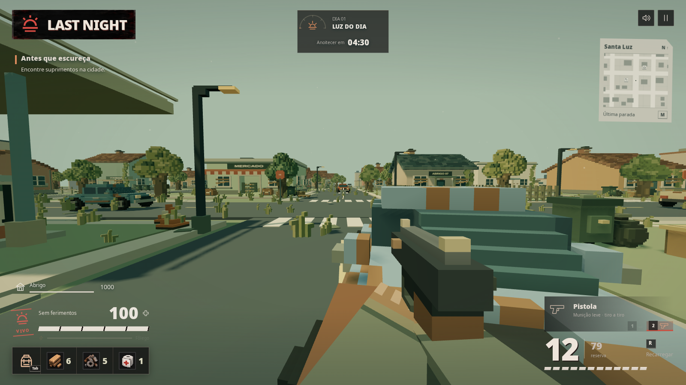
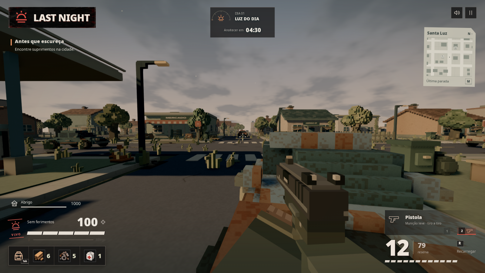
Câmera x 88, z -30 · yaw π · pitch -0.045 · dia
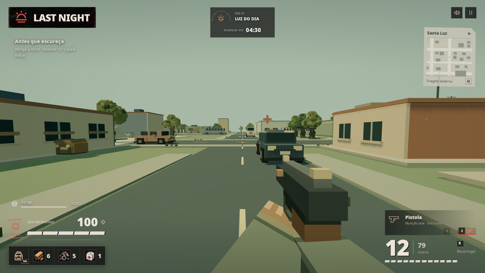
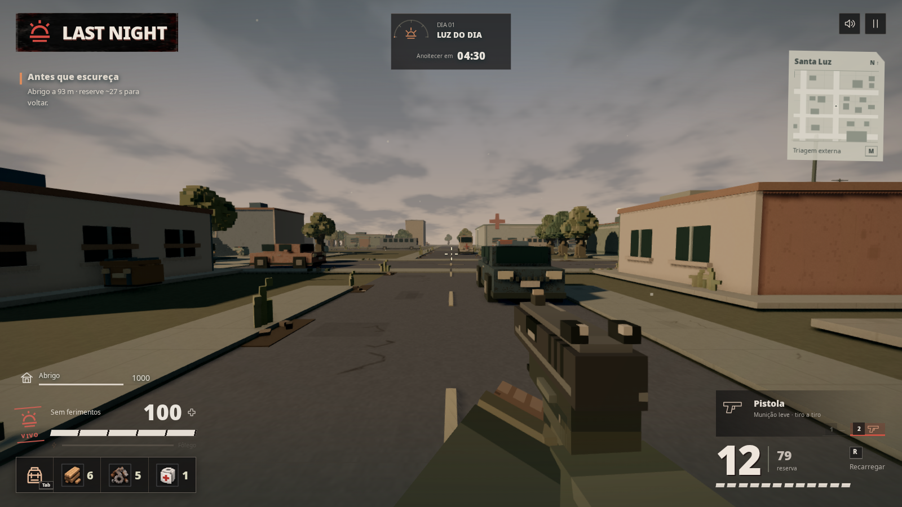
Câmera x 112, z -105 · yaw π · pitch 0 · dia
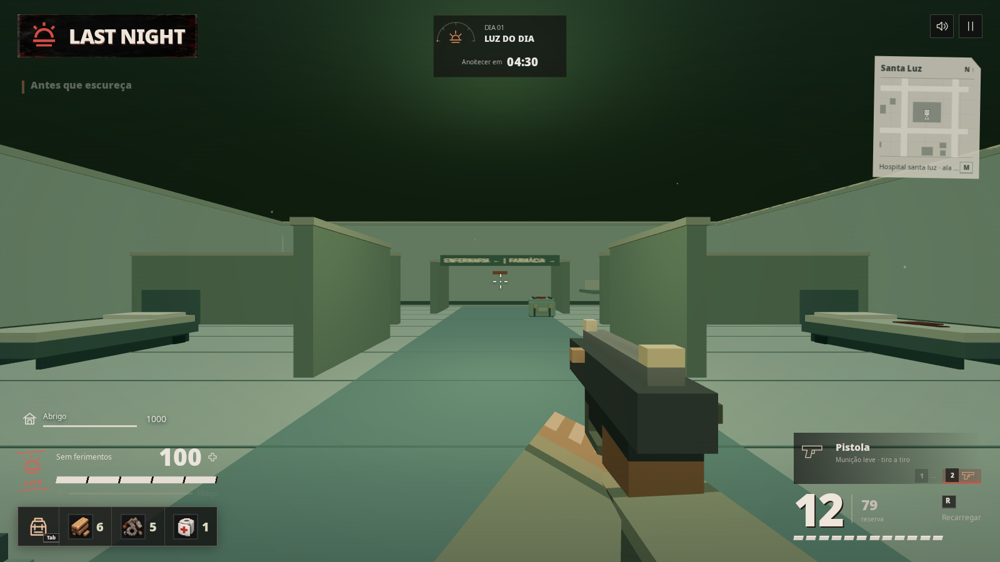
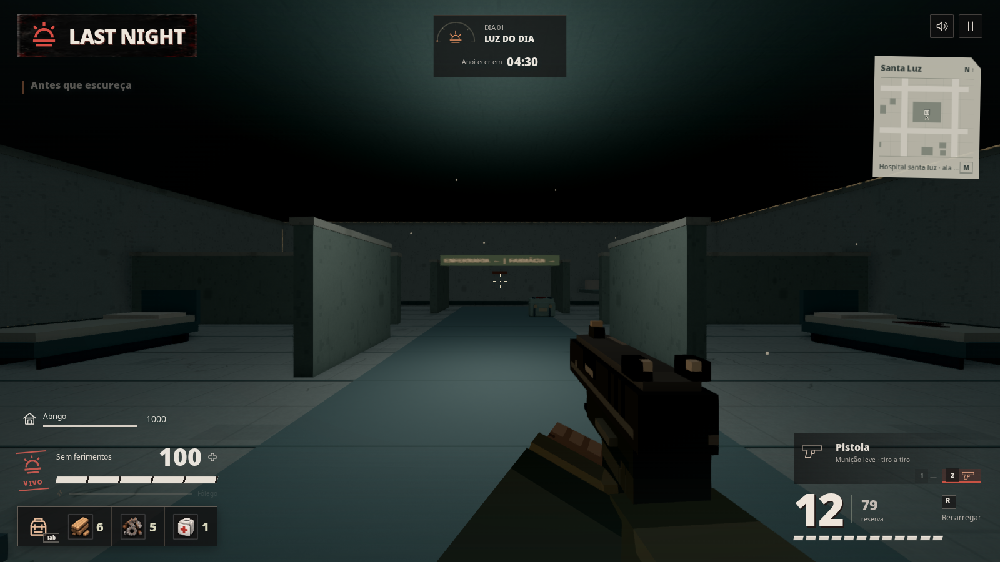
Câmera x 1, z 7 · yaw π · pitch -0.025 · dia
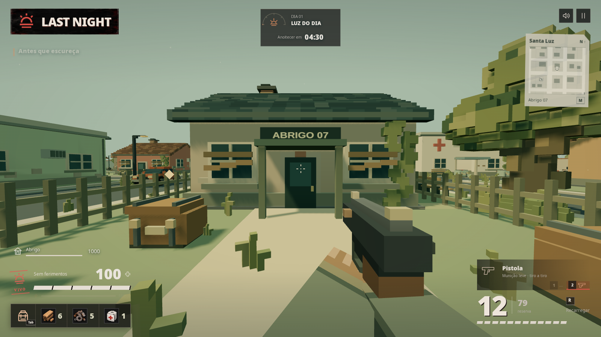
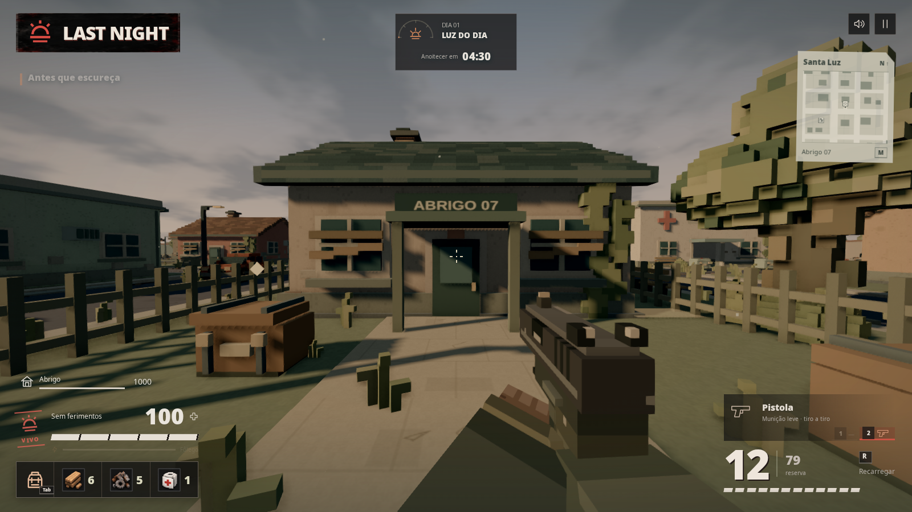
Câmera x -12, z 27 · yaw π · pitch -0.045 · noite
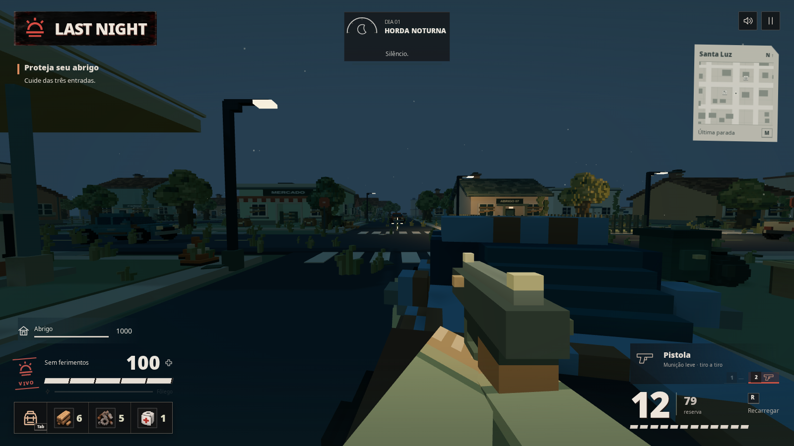
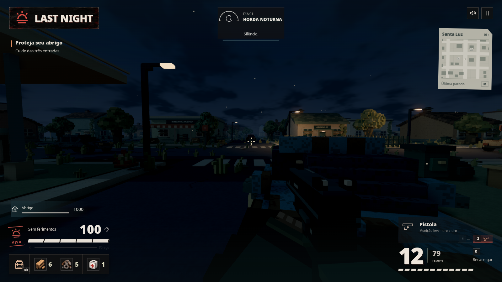
Câmera x -12, z 27 · yaw π · pitch -0.045 · dia
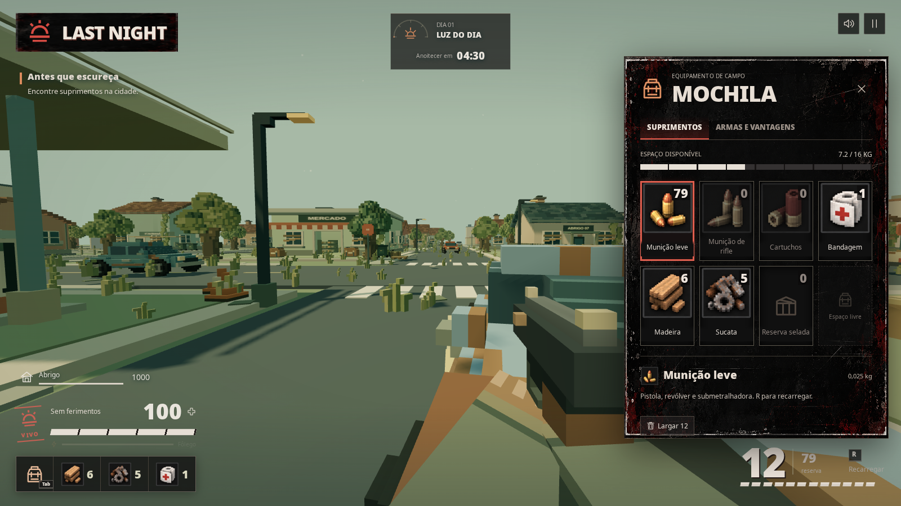
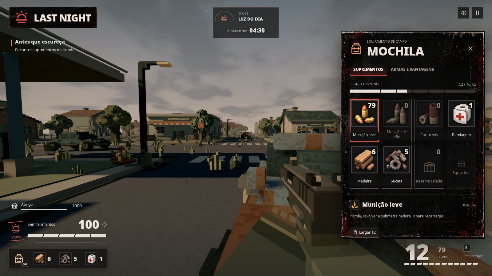
Câmera x 88, z -30 · yaw π · pitch 0 · dia
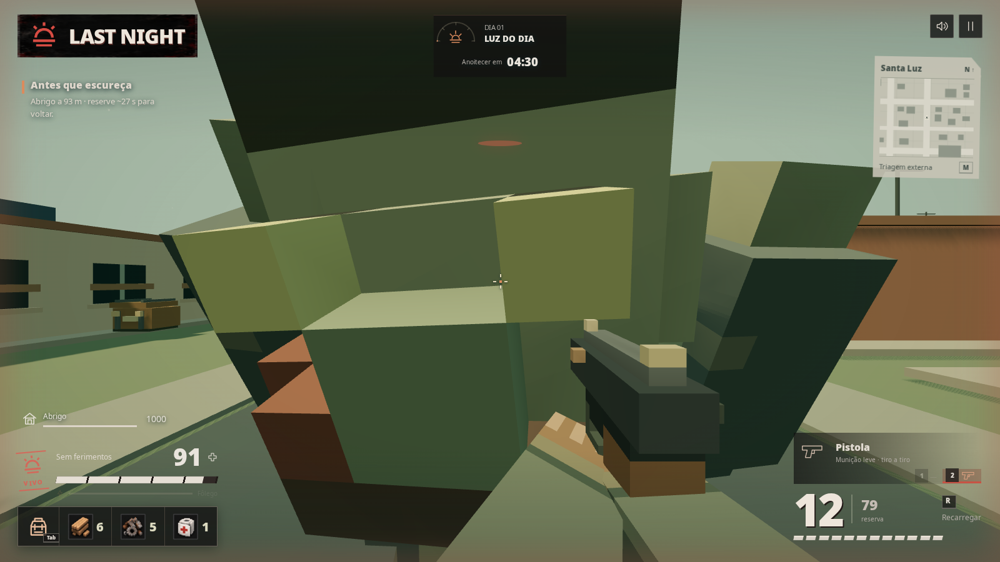
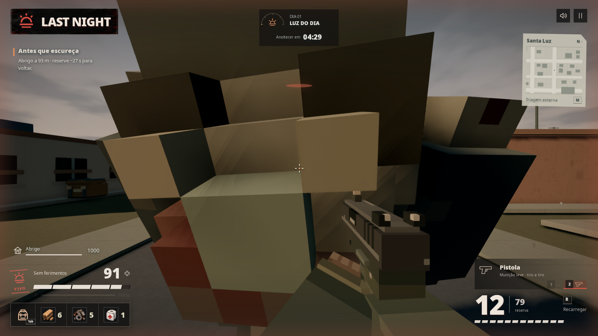
A referência orienta a luz lateral quente, as sombras, os materiais gastos, a atmosfera e a arma. A geometria e o enquadramento da cidade existente foram preservados; o resultado não é uma reprodução pixel a pixel desta imagem.
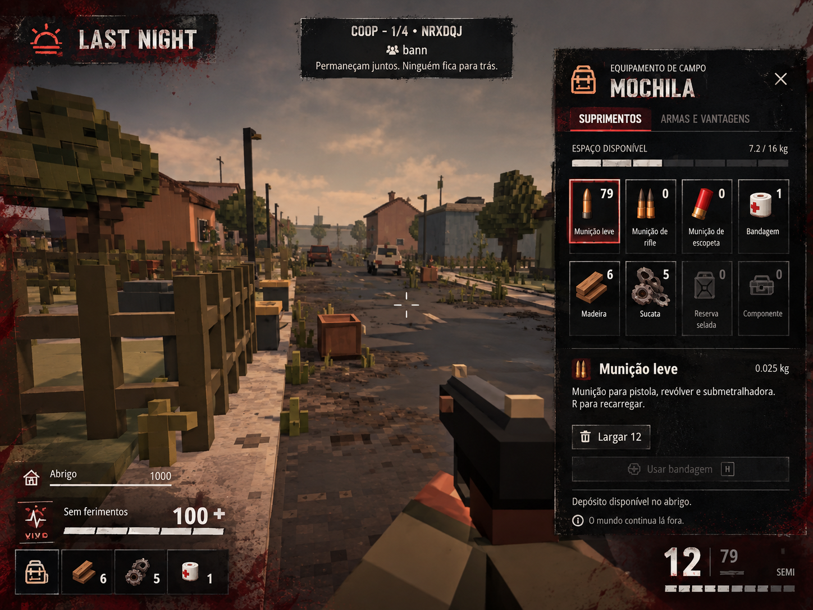